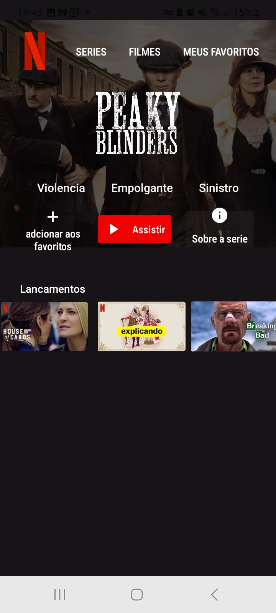
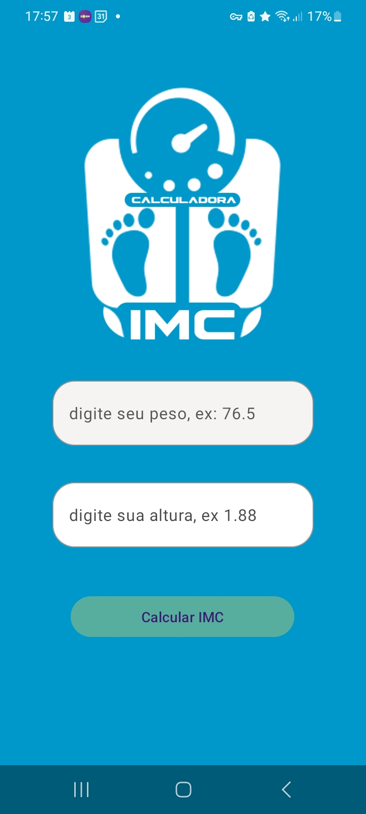
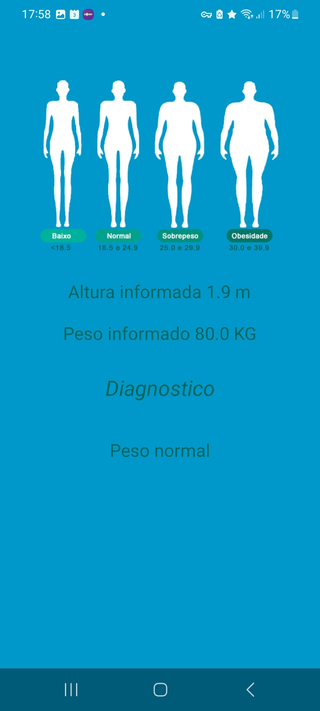
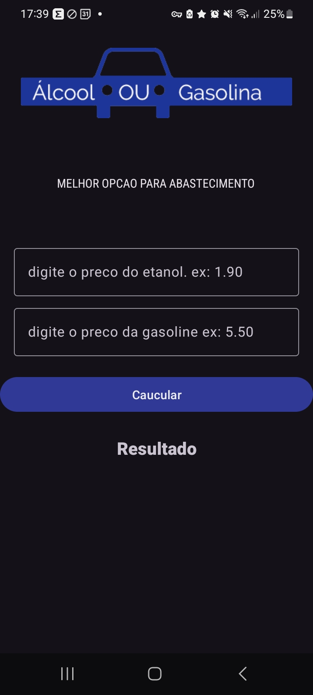

Bem-vindo ao Meu Portfólio
Meus Projetos
Aplicativo Séries
Esse seria um aplicativo de series, que usaria um SDK para acessar as series, mas por hora ainda é algo dificil de implementar (para mim).
Aplicativo Calculadora IMC


Descrição breve do projeto.
Aplicativo para cuculadora combustivel
Esse aplicativo serve para que no hora do abastecimento a pessoa consiga optar pela opção mais econônica.
Proximo objetivo
Criar 2 aplicativos integrados, um para passageiro e outro para motorista, integrar ele com um painel de gerenciamento que usará java com spring e font-end que venho aprendendo nesse módulo, firebase inicialmente para os dados, se necessário, caso aumente a demande, troca pelo google cloud .